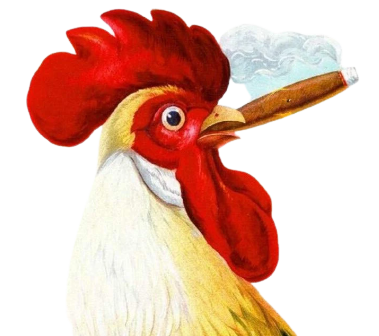
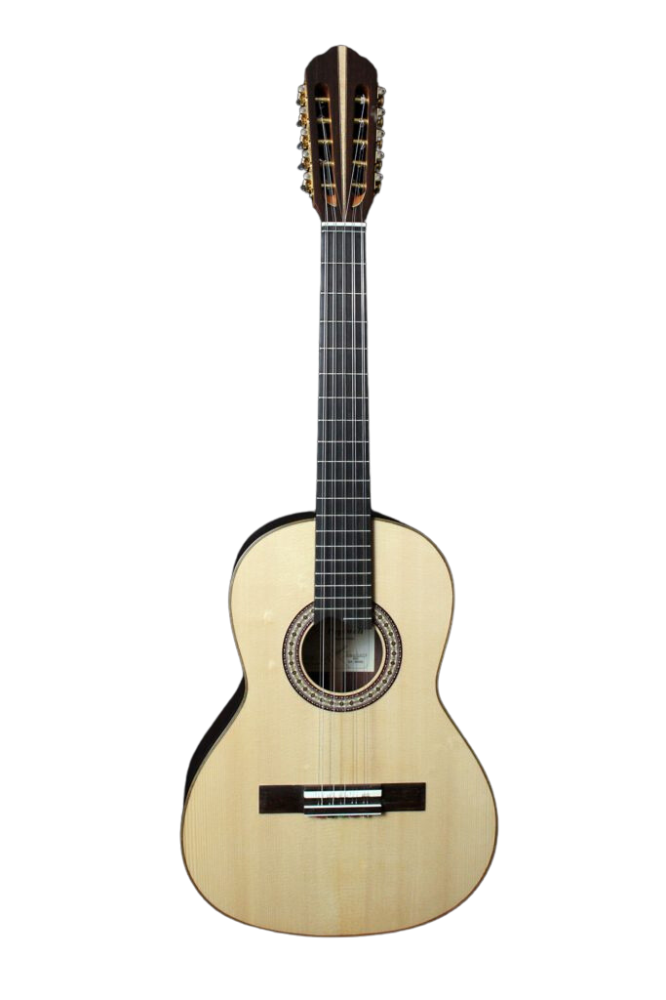
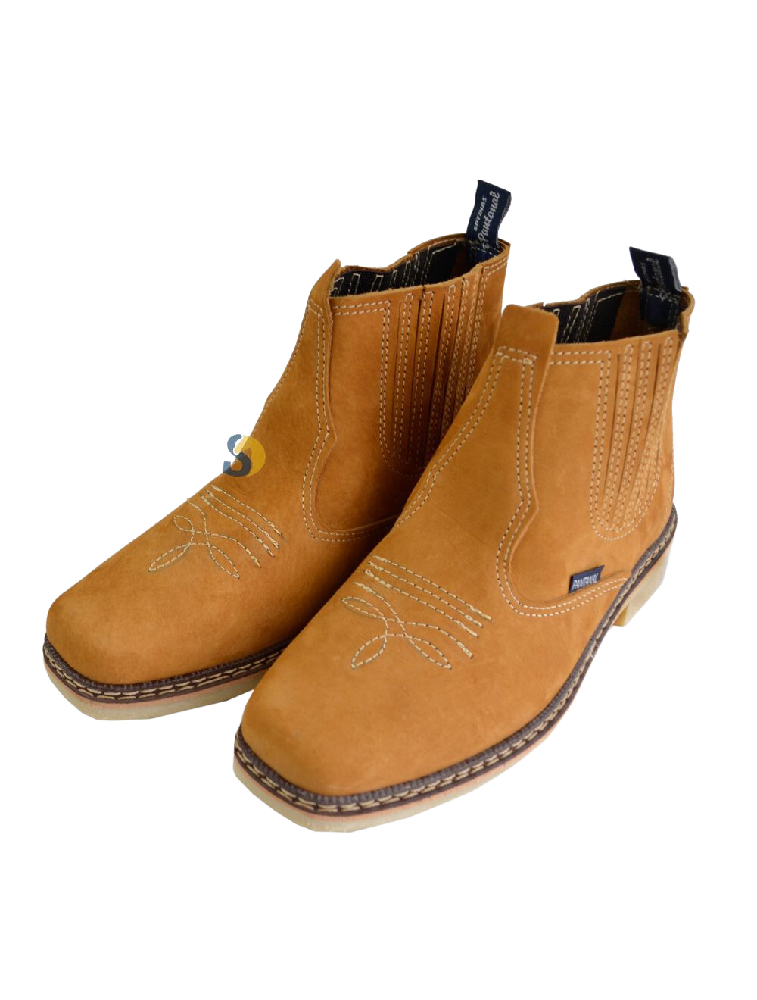

Bem-Vindo ao Atacadão do Tiããããão!
Sr. Tião, fundador do Atacadão do Tião, teve uma infância muito ligada à música. Ele descobriu sua paixão pela viola caipira quando tinha apenas 5 anos de idade e, desde então, passou a dedicar grande parte de seu tempo a estudar e aprimorar suas habilidades musicais Com o tempo, Tião se tornou um violeiro de destaque na região, sendo reconhecido pelo seu talento e pela sua contribuição para a preservação da música caipira. Sua paixão pela música sempre esteve presente em sua vida, e influenciou diretamente a maneira como ele conduziu seus negócios, sempre valorizando a cultura e as tradições brasileiras. Hoje, a loja que Tião fundou continua a honrar sua memória, mantendo sua paixão pela cultura caipira e oferecendo produtos que refletem a riqueza e a diversidade do Brasil. É com orgulho que seguimos seu legado e nos comprometemos a oferecer produtos de qualidade superior a preços acessíveis, sempre mantendo nosso compromisso com a satisfação do cliente.
Nossos Produtos Mais Populares
- 
- 
- 
Depoimentos Dos Nossos Clientes
"Eu sou cliente do Atacadão do Tião há anos, e sempre fui muito bem atendido em todas as minhas compras. Recentemente, decidi experimentar o Fumo Galo, um produto que eu ainda não havia comprado na loja. Fiquei surpreso com a qualidade do produto, o aroma é incrível e o sabor é incomparável. Agora, não compro mais fumo em nenhum outro lugar, só no Atacadão do Tião. Recomendo a todos que experimentem o Fumo Galo, tenho certeza que não vão se arrepender."
Sr. Francisco de Alcantra
"Sempre compro no Atacadão do Tião, pois sei que encontrarei tudo o que preciso com qualidade e bom preço. Mas, recentemente, me surpreendi com um produto que nunca havia comprado antes: o Chicote. Fiquei um pouco receosa, pois não sabia como usar o produto, mas o atendente da loja me explicou tudo com muita paciência e atenção. Ao experimentar o Chicote, percebi que é um produto muito versátil, que pode ser usado para diversas finalidades, como na lida com animais ou para praticar esportes radicais. Além disso, a qualidade do produto é inquestionável, feito com materiais resistentes e duráveis. Fiquei muito satisfeita com minha compra e recomendo o Atacadão do Tião para todos que buscam qualidade, variedade e bom atendimento. Agradeço ao Sr. Tião e sua equipe pela dedicação em trazer produtos tão especiais para seus clientes."
Dona Maria - 80 Anos
"Eu sempre fui apaixonado por cavalos, mas nunca tinha visto um tão especial como o potro anão que comprei no Atacadão do Tião. Fiquei encantado com a beleza e a singularidade desse animal, e não pude resistir à oportunidade de adquiri-lo para mim. O atendimento na loja foi excepcional, a equipe me deu todas as informações que eu precisava para cuidar adequadamente do potro e garantir sua saúde e bem-estar. E agora, todos os meus amigos e vizinhos vêm visitar o meu novo animal e se impressionam com sua beleza e singularidade. O Atacadão do Tião é um lugar especial, onde você encontra produtos de qualidade e diferenciados, como esse potro anão. Sou grato ao Sr. Tião e sua equipe por trazerem produtos tão exclusivos e especiais para nós clientes. Recomendo a loja para todos que buscam algo diferente e único."
Alexandro Borba Chiqueta